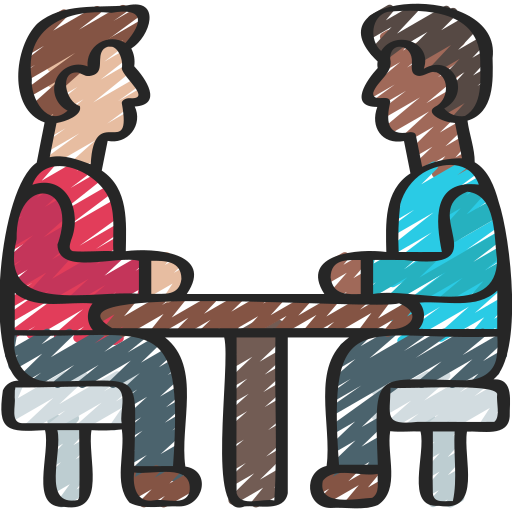
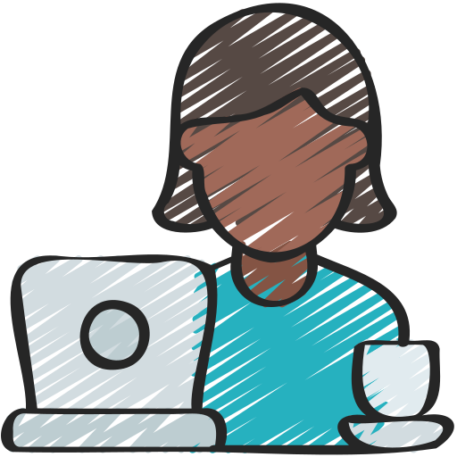
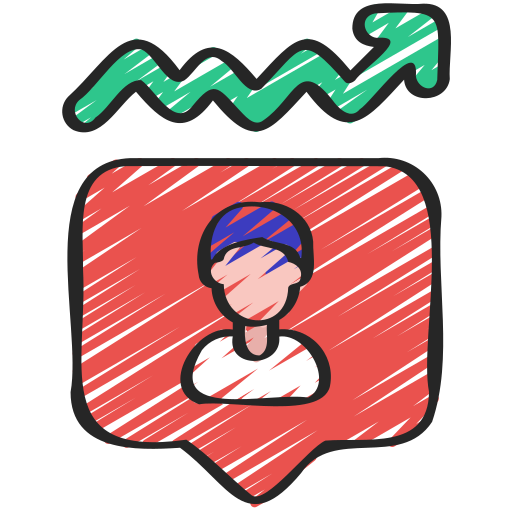

About
I am always curious about new things, especially in designing things. I am interested in learning and exploring things. I have the motivation to keep growing.

Graphic Designer
A budding graphic designer with experience in designing Instagram feeds for campus organizations. I focus on creating engaging and informative visuals, combining creativity with the goal of effective communication. Eager to continue learning and developing skills in the field of graphic design. using figma, canva, lightroom as a tool for designing.

Freelancer
I am a freelance private English tutor with three months of teaching experience, passionate about sharing language skills and helping students reach their learning goals. I also enjoy contributing to social causes by volunteering to teach in community programs, making education accessible to all. My dedication to both professional and volunteer teaching reflects my commitment to making a positive impact through language education.

Social Media Manager
I am a Social Media Manager with experience managing Instagram accounts for the BEM and KSR organizations over a full term. With skills in designing visually appealing feeds and developing relevant content strategies, I successfully increased engagement and strengthened the organizations' branding through social media. My focus is on creating content that is both informative and aesthetic, fostering genuine connections with audiences through authentic and creative approaches.